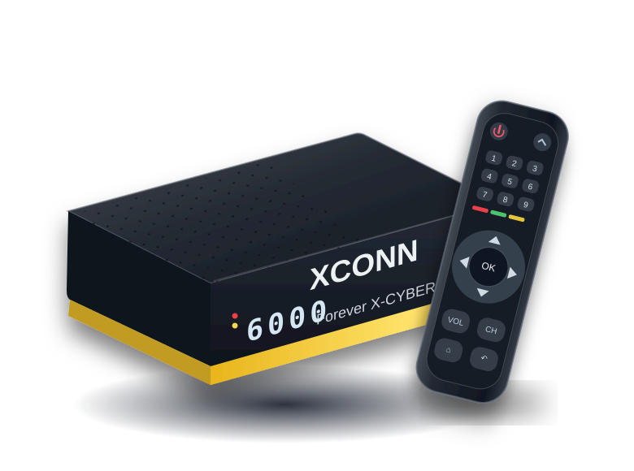

مصدر التحميل
ملفات التحديث المعتمدة للموديل
راجع قائمة النسخ وتواريخ صدورها من موقع الدعم المخصص للجهاز. الملفات نفسها مش مستضافة هنا.
فتح صفحة تحميل X-CYBERروابط تحديثات السوفتوير، دليل الاستخدام، وحلول للمشاكل الشائعة — بشكل بسيط وواضح ومن غير لف ودوران.

افتح صفحة الموديل الصحيحة في بوابة الدعم وراجع الإصدار قبل أي تحميل.
الصفحة دي خاصة بـ XCONN Forever X-CYBER فقط. ما تستخدمش ملفات X-CYBER Plus (+) أو أي موديل تاني. خُد نسخة احتياطية، وما تفصلش الكهرباء أثناء التحديث.
راجع قائمة النسخ وتواريخ صدورها من موقع الدعم المخصص للجهاز. الملفات نفسها مش مستضافة هنا.
فتح صفحة تحميل X-CYBERأمثلة من الإصدارات المعروضة وقت إعداد الصفحة؛ راجع المصدر لمعرفة أحدث نسخة متاحة.
خطوات عامة قبل أي تحديث للنظام أو التطبيقات.
افتح معلومات الجهاز وراجع إن الاسم Forever X-CYBER من غير علامة Plus.
احتفظ بنسخة من بيانات القنوات والإعدادات المهمة، لو الخيار متاح على جهازك.
فضّل التحديث من داخل الجهاز (OTA) إن كان متاحًا، أو اتبع تعليمات الملف المنشورة في بوابة الدعم.
ما تفصلش الكهرباء خلال التثبيت. إعادة ضبط المصنع قد تمسح بياناتك؛ اعملها فقط عند الحاجة.
اختار نوع المشكلة أو ابحث عنها، واضغط على السؤال لعرض خطوات الحل.
اتأكد من توصيل سلك الدش في مدخل الـ LNB، واختار القمر والتردد الصحيحين من إعدادات التركيب. راجع قوة الإشارة وجودتها، ولو ضعاف افحص الكابل والـ LNB وضبط الطبق. ما تعملش بحث أعمى قبل مراجعة إعدادات الدش.
اتأكد إن الجهاز شغال وإن التلفزيون على مدخل HDMI الصحيح. جرّب فصل وتوصيل كابل HDMI أو كابل تاني، وأعد تشغيل الجهاز. لو المشكلة بدأت بعد تغيير دقة الصورة، جرّب شاشة متوافقة أو راجع إعدادات العرض.
ارفع مستوى الصوت في الجهاز والتلفزيون، وألغِ وضع الكتم (Mute). افحص كابل HDMI وجرّب قناة تانية. لو المشكلة في قناة واحدة، راجع مسار الصوت من إعدادات القناة.
غيّر البطاريات أولًا، وجرّب التحكم من مسافة قريبة. لو أزرار البلوتوث أو الصوت مش شغالة، افتح إعدادات Bluetooth في الجهاز وراجع حالة اقتران الريموت، واتبع إرشادات الاقتران الظاهرة على الشاشة. تجنّب استخدام اختصار أزرار غير موثّق.
جرّب الإنترنت من موبايل على نفس الشبكة. أعد تشغيل الراوتر والجهاز، ثم احذف الشبكة وأعد الاتصال بكلمة المرور الصحيحة. لو متاح، جرّب وصلة LAN للتأكد من مصدر المشكلة.
راجع الاسم الدقيق للموديل والإصدار وصيغة الملف من بوابة دعم XCONN. ما تستخدمش ملف Plus، وما تغيّرش امتداد الملف من نفسك. اتبع تعليمات التثبيت المرفقة مع الإصدار. لو الجهاز لا يقلع، تجنّب التفليش العشوائي واستعن بفني مؤهل.
المواصفات الأساسية طبقًا لصفحة المنتج المنشورة على موقع XCONN.
مواصفات الجهاز من المصدرروابط تقدر ترجع لها وقت ما تحتاج معلومات أو تحميلات إضافية.
جهّز وصف واضح للمشكلة عشان تقدر تبعته لفني الدعم أو في أي مجتمع مختص. الزر بينسخ رسالة بس، ومش بيبعت بياناتك لأي مكان.
ما تشاركش رقمك التسلسلي أو كلمات المرور أو بيانات حسابك بشكل علني.